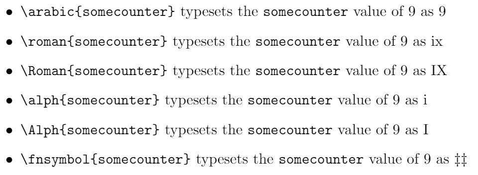
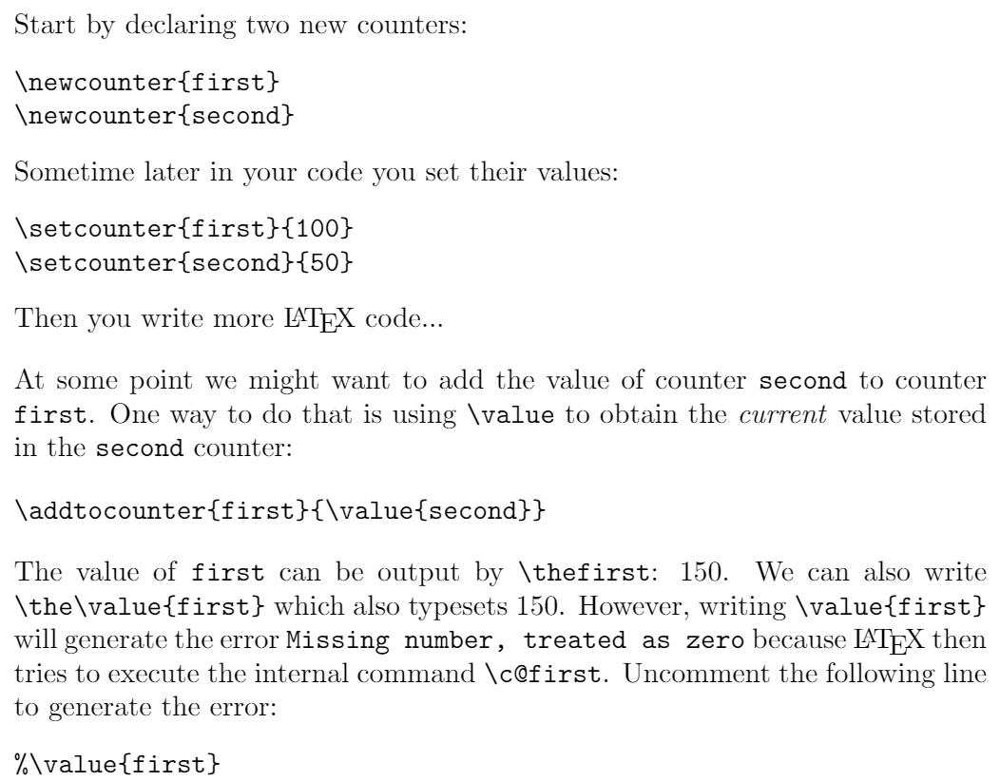
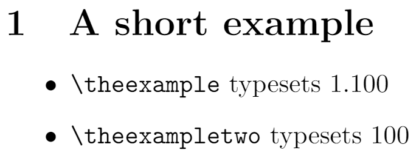
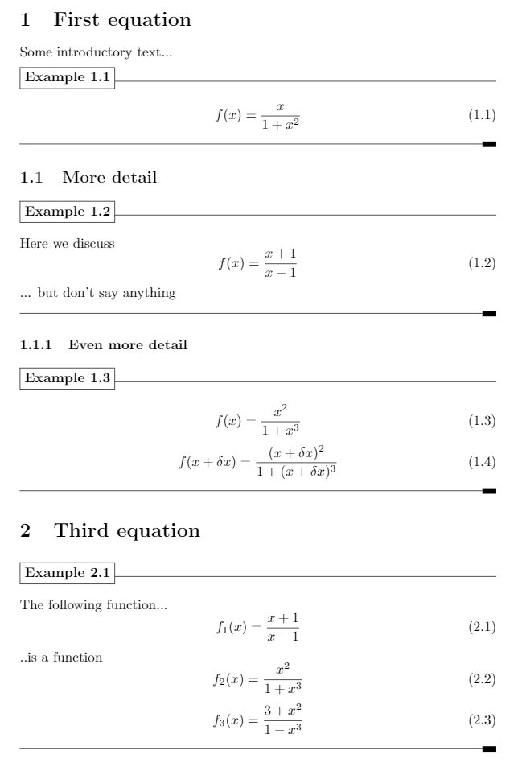
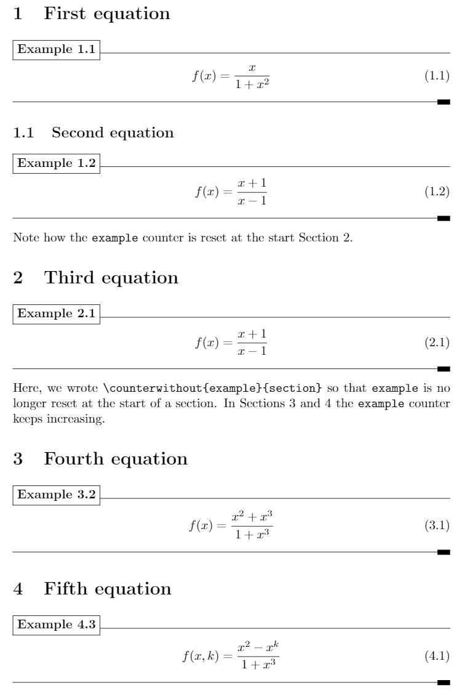
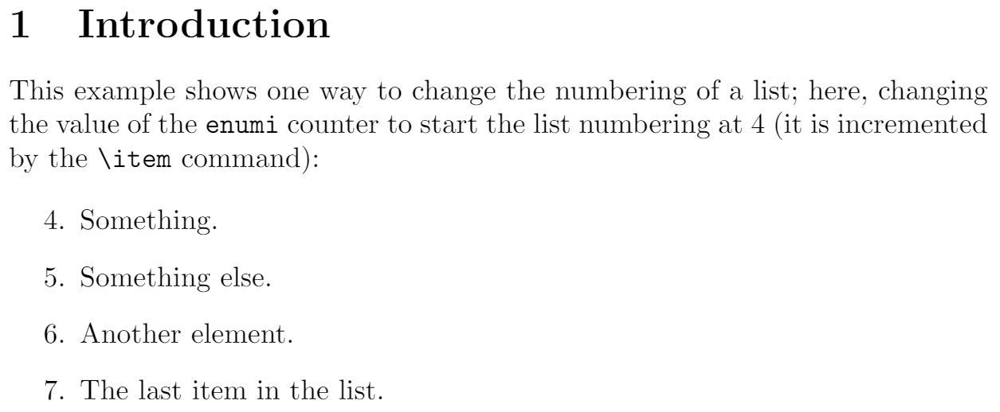

Counters
Introduction to LaTeX counters
LaTeX-based typesetting is a specialized form of programming: you are using a typesetting language (LaTeX commands) to provide “instructions” which result in an output: the compiled LaTeX document in the form of a PDF file. As with any programming endeavour, it’s likely that you will need LaTeX to temporarily store integer values for later re-use in your document (code)—you might want to:
- typeset those stored integers in your document
- provide automatic numbering of certain elements of your document
- use them as variables to control conditional code (or loops)
- change and update their values by incrementing/decrementing using some fixed value
- reset them to completely different values
Such integer-processing activities are extremely common in “regular” programming languages such as Javascript, C, Lua or any other language of your choice where you typically declare (create a name for) a variable (to contain an integer) and then assign a value to it. The LaTeX typesetting language provides similar capabilities, albeit implemented in a quite different way, as we’ll explore below.
In essence, a LaTeX counter is the name of a “LaTeX variable” used to store integer values which can be used for the actives listed above, and much else besides. LaTeX itself uses numerous internal counters which provide numbering of pages, sections, tables, figures, bulleted/numbered lists etc. This article explains how to access and modify those counters and how to create and use new ones.
LaTeX commands for working with counters
Here is a list of LaTeX’s counter commands linked to its description in the following sections.
Creating and incrementing counters:
\newcounter{somecounter}[anothercounter]\setcounter{somecounter}{number}\addtocounter{somecounter}{number}\stepcounter{somecounter}\refstepcounter{somecounter}
Accessing and printing counter values:
\arabic{somecounter}\roman{somecounter}\Roman{somecounter}\alph{somecounter}\Alph{somecounter}\fnsymbol{somecounter}\value{somecounter}
Other counter commands:
Creating and incrementing counters
\newcounter{somecounter}[anothercounter]
Used to define a new counter. The second argument, enclosed in [], is optional but when used it defines somecounter as a new counter which is reset when anothercounter is stepped. \newcounter is often used in its simpler form \newcounter{somecounter} which creates somecounter and initializes it to contain 0.
- Note: For each counter created by the
\newcountercommand, it also defines a command that can be used to typeset the counter’s value. For example,\newcounter{mycounter}defines a command called\themycounter. An example is shown in the following LaTeX code fragment which you can open in Overleaf, as a fully-formed document, using the link provided:
\newcounter{mycounter}
\setcounter{mycounter}{42}
You can now write \verb|\themycounter| to obtain \themycounter.
Open this LaTeX fragment in Overleaf
This example produces \(\text{You can now write }\verb|\themycounter|\text{ to obtain 42.}\)
- Note: If
mycounterhas already been defined LaTeX will issue the errorc@mycounter already defined, as demonstrated by the following example you can open in Overleaf.
\newcounter{mycounter}
...lots of code... but we forget and write \verb|\newcounter{mycounter}| again
\newcounter{mycounter}
Open this error-generating code in Overleaf
\setcounter{somecounter}{number}
Sets somecounter to contain the value number.
- Note:
numbercan be positive or negative.
An example is shown in the following LaTeX code fragment which you can open in Overleaf, as a fully-formed document, using the link provided:
\noindent Create a new counter \texttt{myvar} and assign it the value \texttt{42}.
\vspace{10pt}
\newcounter{myvar}
\setcounter{myvar}{42}
\noindent Writing \verb|\themymar| typesets \texttt{\themyvar}.
\vspace{10pt}
\noindent Next, we'll change \texttt{myvar} to \texttt{-42}, writing \verb|\setcounter{myvar}{-42}|
\setcounter{myvar}{-42}. Now, writing \verb|\themyvar| outputs \texttt{\themyvar}.
Open this LaTeX fragment in Overleaf
\addtocounter{somecounter}{number}
Increases the counter somecounter by amount number.
- Note:
numbercan be positive, to increase the counter value, or negative to decrease it. For example:
\addtocounter{somecounter}{-1} % decreases somecounter by 1
An example is shown in the following LaTeX code fragment which you can open in Overleaf, as a fully-formed document, using the link provided:
\noindent Create a new counter \texttt{myvar} and assign it the value \texttt{42}.
\vspace{10pt}
\newcounter{myvar}
\setcounter{myvar}{42}
\noindent Writing \verb|\themymar| typesets \texttt{\themyvar}.
\vspace{10pt}
\noindent Next, we’ll change \texttt{myvar} to \texttt{142} by writing \verb|\addtocounter{myvar}{100}|\addtocounter{myvar}{100}. Now, writing \verb|\themyvar| outputs \texttt{\themyvar}.
Open this LaTeX fragment in Overleaf
\stepcounter{somecounter}
Increments somecounter by 1. An example is shown in the following LaTeX code fragment which you can open in Overleaf, as a fully-formed document, using the link provided:
If we create a new counter by writing \verb|\newcounter{mycounter}|
\newcounter{mycounter} then the counter \texttt{mycounter} is created and
initialized to zero, as you can see if you write \verb|\themycounter|:
\texttt{mycounter} currently stores: \themycounter.
If we now write \verb|\stepcounter{mycounter}|\stepcounter{mycounter} then
\verb|\themycounter| now contains the value \themycounter.
Open this LaTeX fragment in Overleaf
\refstepcounter{somecounter}
Increases somecounter by 1 and makes it visible for the referencing mechanism, also setting the value so that you can use \label afterwards.
Example using \refstepcounter
The following example uses \refstepcounter to create a new counter for an example environment and uses \label and \ref to illustrate referencing using the example counter variable.
\documentclass{article}
\newcounter{example}[section]
\newenvironment{example}[1][]{\refstepcounter{example}\par\medskip
\noindent\textbf{Example~\theexample. #1} \rmfamily}{\medskip}
\begin{document}
\section{Three examples}
\begin{example}
Create a label in this first example \verb|\label{ex:1}|\label{ex:1}. This is the first example. The \texttt{example} counter will be reset at the start of each new each document \verb|\section|.
\end{example}
\begin{example}
And here's another numbered example. Create a second \verb|\label{ex:2}|\label{ex:2} to later reference this one. In Example \ref{ex:1} we read... something.
\end{example}
\begin{example}
And here's another numbered example: use \verb|\theexample| to typeset the number currently assigned to the \texttt{example} counter: it is \theexample.
\end{example}
\section{Another section}
We've just started a new section meaning that the \texttt{example} counter has been set to \theexample.
We'll reference examples from the previous section (Examples \ref{ex:1} and \ref{ex:2}). This is a dummy section with no purpose whatsoever but to contain text. The \texttt{section} counter for this section can be typeset using \verb|\thesection|: it is currently assigned the value of \thesection.
\begin{example}
This is the first example in this section: the \texttt{example} counter has been stepped and now set to \theexample.
\end{example}
\end{document}
Open this \refstepcounter example in Overleaf
Code summary
In this example, the new environment example is defined, this environment has 3 counting-specific commands:
\newcounter{example}[section]: Creates a new counter calledexamplethat will be reset to 0 every time thesectioncounter is increased. You can put any other counter instead ofsectionor omit the parameter if you don’t want your counter to be automatically reset.
\refstepcounter{example}: Increases theexamplecounter by 1 and makes it visible for the referencing mechanism, so that you can use\labelafterwards.
\theexample: Prints the current value of the counterexample.
For further information on user-defined environments see the article about defining new environments
Accessing and printing counter values
The following discussions are based on the LaTeX defaults prior to any customization applied by packages loaded by the user.
\arabic{somecounter}
Output the representation of somecounter as Arabic numerals: 1, 2, 3...
\roman{somecounter}
Output the representation of somecounter as a lower-case Roman numeral: i, ii, iii...
- Note: If
somecounter\(\leq\)0no output is produced. In addition, converting extremely large integer values to lower-case Roman numerals can take a long time to complete—and produces a lengthy sequence ofmcharacters (representing the number1000).
- TIP: If you are interested in the algorithm TeX uses to convert Arabic numbers to Roman numerals you can read about it this article on Algorithms for Roman Numerals.
\Roman{somecounter}
Output the representation of somecounter as an upper-case Roman numeral: I, II, III...
- Note: If
somecounter\(\leq\)0no output is produced. In addition, converting extremely large integer values to upper-case Roman numerals can take a long time to complete—and produces a lengthy sequence ofMcharacters (representing the number1000).
- TIP: If you are interested in the algorithm TeX uses to convert Arabic numbers to Roman numerals you can read about it this article on Algorithms for Roman Numerals.
\alph{somecounter}
Output the representation of somecounter as a lower-case letter where a=1, b=2, c=3...
- Note:
somecountermust be in the range1\(\leq\)somecounter\(\leq\)26, otherwise it will trigger the error! LaTeX Error: Counter too large.
\Alph{somecounter}
Output the representation of somecounter as an upper-case letter where A=1, B=2, C=3...
- Note:
somecountermust be in the range1\(\leq\)somecounter\(\leq\)26, otherwise it will trigger the error! LaTeX Error: Counter too large.
\fnsymbol{somecounter}
Output the representation of somecounter as a footnote symbol where 1 =∗, 2 =†...
- Note:
somecountermust be in the range1\(\leq\)somecounter\(\leq\)9, otherwise it will trigger the error! LaTeX Error: Counter too large.
Value of somecounter |
Character typeset by \fnsymbol |
| 1 | * |
| 2 | † |
| 3 | ‡ |
| 4 | § |
| 5 | ¶ |
| 6 | ∥ |
| 7 | ∗∗ |
| 8 | †† |
| 9 | ‡‡ |
Example of printing counter values
The following example demonstrates use of the commands \arabic{somecounter}, \roman{somecounter}, \Roman{somecounter}, \alph{somecounter}, \Alph{somecounter}, and \fnsymbol{somecounter}.
\newcounter{somecounter}
\setcounter{somecounter}{9}
\begin{itemize}
\item \verb|\arabic{somecounter}| typesets the \texttt{somecounter} value of \thesomecounter{} as \arabic{somecounter}
\item \verb|\roman{somecounter}| typesets the \texttt{somecounter} value of \thesomecounter{} as \roman{somecounter}
\item \verb|\Roman{somecounter}| typesets the \texttt{somecounter} value of \thesomecounter{} as \Roman{somecounter}
\item \verb|\alph{somecounter}| typesets the \texttt{somecounter} value of \thesomecounter{} as \alph{somecounter}
\item \verb|\Alph{somecounter}| typesets the \texttt{somecounter} value of \thesomecounter{} as \Alph{somecounter}
\item \verb|\fnsymbol{somecounter}| typesets the \texttt{somecounter} value of \thesomecounter{} as \fnsymbol{somecounter}
\end{itemize}
Open this LaTeX fragment in Overleaf
This example produces the following Output:

\value{somecounter}
This purpose of command, as described in the LaTeX source code, is “For accessing the value of the counter as a TeX number”: i.e., you use \value{somecounter} for situations where LaTeX is expecting to process a numeric value.
(Optional) background notes on the \value command
It’s tempting to think the command \value{somecounter} will directly typeset the value of somecounter, but this is not the case. It is intended for use within other commands to access the value of the counter as a TeX number, as opposed to the command \thesomecounter which produces the printed representation of somecounter.
Within the LaTeX source code, \value is defined as:
\def\value#1{\csname c@#1\endcsname}
Consequently, \value{somecounter} creates an instance of the LaTeX-internal control sequence \c@somecounter which contains the value of the counter somecounter.
Example
The following example shows one basic use-case of \value.
\noindent Start by declaring two new counters:
\begin{verbatim}
\newcounter{first}
\newcounter{second}
\end{verbatim}
\newcounter{first}
\newcounter{second}
\noindent Sometime later in your code you set their values:
\begin{verbatim}
\setcounter{first}{100}
\setcounter{second}{50}
\end{verbatim}
\setcounter{first}{100}
\setcounter{second}{50}
\noindent Then you write more \LaTeX{} code...\vspace{10pt}
\noindent At some point we might want to add the value of counter \texttt{second} to counter \texttt{first}. One way to do that is using \verb|\value| to obtain the \textit{current} value stored in the \texttt{second} counter:
\begin{verbatim}
\addtocounter{first}{\value{second}}
\end{verbatim}
\addtocounter{first}{\value{second}}\noindent The value of \texttt{first} can be output by \verb|\thefirst|: \thefirst. We can also write \verb|\the\value{first}| which also typesets \the\value{first}. However, writing \verb|\value{first}| will generate the error \texttt{Missing number, treated as zero} because \LaTeX{} then tries to execute the internal command \verb|\c@first|. Uncomment the following line to generate the error:
\begin{verbatim}
%\value{first}
\end{verbatim}
%\value{first}
Open this code fragment in Overleaf
This example produces the following output:

Other counter commands
Here we describe the commands \counterwithin and \counterwithout which originated in the chngcntr package but have now been integrated into LaTeX itself—see LaTeX News, April 2018. The chngcntr package documentation makes the following comments which help to understand the purpose of these commands:
On \counterwithin:
It is sometimes desirable to change a counter that has been defined by
\newcounter{<ctr>}to act as though it had been defined as\newcounter{<ctr>}[<within>]. The package provides the command\counterwithin{<ctr>}{<within>}that accomplishes this.
On \counterwithout:
Likewise, the command
\counterwithout{<ctr>}{<within>}changes a counter that has been created by\newcounter{<ctr>}[<within>]to act as though it had been created by\newcounter{<ctr>}.
In essence, these two commands provide a method to link (\counterwithin) or unlink (\counterwithout) two counters after they have been defined.
\counterwithin{somecounter}{anothercounter}
Resets somecounter to 0 whenever anothercounter is stepped, a mechanism which links the two counters. In addition to creating a link, this command redefines what is typeset by \thesomecounter: instead of outputting the value of counter somecounter it produces <value of anothercounter>.<value of somecounter>. The starred form (\counterwithin*{somecounter}{anothercounter}) does not redefine the print-format of somecounter, as the following example demonstrates—select the link below the code to open it in Overleaf:
\documentclass{article}
\begin{document}
\section{A short example}
\newcounter{example}
\counterwithin{example}{section}
\newcounter{exampletwo}
\counterwithin*{exampletwo}{section}
\setcounter{example}{100}
\setcounter{exampletwo}{100}
\begin{itemize}
\item \verb|\theexample| typesets \theexample
\item \verb|\theexampletwo| typesets \theexampletwo
\end{itemize}
\end{document}
Open this \counterwithin example in Overleaf
This example produces the following output:

You can use \counterwithin with standard counters provided by LaTeX, such as:
section: used by\sectioncommandequationused by theequationenvironment
or with counters you have created.
Example of \counterwithin and \counterwithin*
The following code provides a more complete example of using \counterwithin and \counterwithin*; select the link below the code to open it in Overleaf:
\documentclass{article}
\counterwithin{equation}{section}
\newcounter{example}
\counterwithin*{example}{section}
\newenvironment{example}[1][]{%
\stepcounter{example}%
\par\vspace{5pt}\noindent
\fbox{\textbf{Example~\thesection.\theexample}}%
\hrulefill\par\vspace{10pt}\noindent\rmfamily}%
{\par\noindent\hrulefill\vrule width10pt height2pt depth2pt\par}
\begin{document}
\section{First equation}
Some introductory text...
\begin{example}
\begin{equation}
f(x)=\frac{x}{1+x^2}
\end{equation}
\end{example}
\subsection{More detail}
\begin{example}
Here we discuss
\begin{equation}
f(x)=\frac{x+1}{x-1}
\end{equation}
... but don't say anything
\end{example}
\subsubsection{Even more detail}
\begin{example}
\begin{equation}
f(x)=\frac{x^2}{1+x^3}
\end{equation}
\begin{equation}
f(x+\delta x)=\frac{(x+\delta x)^2}{1+(x+\delta x)^3}
\end{equation}
\end{example}
\section{Third equation}
\begin{example}
The following function...
\begin{equation}
f_1(x)=\frac{x+1}{x-1}
\end{equation}
..is a function
\begin{equation}
f_2(x)=\frac{x^2}{1+x^3}
\end{equation}
\begin{equation}
f_3(x)=\frac{3+ x^2}{1-x^3}
\end{equation}
\end{example}
\end{document}
Open this \counterwithin example in Overleaf
This example produces the following output:

Code summary
\newcounter{example}: This creates a new counter for use in our environment, also calledexample\counterwithin*{example}{section}: This links ourexamplecounter with thesectioncounter used within the\sectioncommand: each time we issue a\sectioncommand theexamplecounter is reset to zero. Note that we used the starred version\counterwithin*to avoid redefinition of\theexample- Next, we create a new environment also called
example. Within that environment we use\stepcounter{example}to increment the environment’s counter. Note too we write\textbf{Example~\thesection.\theexample}to output Example<section number>.<example number>
\newenvironment{example}[1][]{%
\stepcounter{example}%
\par\vspace{5pt}\noindent
\fbox{\textbf{Example~\thesection.\theexample}}%
\hrulefill\par\vspace{10pt}\noindent\rmfamily}%
{\par\noindent\hrulefill\vrule width10pt height2pt depth2pt}
\counterwithout{somecounter}{anothercounter}
\counterwithout{somecounter}{anothercounter} removes the link between somecounter and anothercounter so that they are independent. For any pair of counters, you can switch between using \counterwithout and \counterwithin, as the following example shows for the example and section counters—you can open this example in Overleaf using the link provided below the code.
\section{First equation}
\begin{example}
\begin{equation}
f(x)=\frac{x}{1+x^2}
\end{equation}
\end{example}
\subsection{Second equation}
\begin{example}
\begin{equation}
f(x)=\frac{x+1}{x-1}
\end{equation}
\end{example}
\vspace{6pt}\noindent Note how the \texttt{example} counter is reset at the start Section \ref{sec:n0}.
\section{Third equation}
\label{sec:n0}
\begin{example}
\begin{equation}
f(x)=\frac{x+1}{x-1}
\end{equation}
\end{example}
\vspace{6pt}\noindent Here, we wrote \verb|\counterwithout{example}{section}| so that \texttt{example} is no longer reset at the start of a section. In Sections \ref{sec:n1} and \ref{sec:n2} the \texttt{example} counter keeps increasing. \counterwithout{example}{section}
\section{Fourth equation}
\label{sec:n1}
\begin{example}
\begin{equation}
f(x)=\frac{x^2+x^3}{1+x^3}
\end{equation}
\end{example}
\section{Fifth equation}
\label{sec:n2}
\begin{example}
\begin{equation}
f(x,k)=\frac{x^2-x^k}{1+x^3}
\end{equation}
\end{example}
Open this \counterwithout example in Overleaf
This example produces the following output:

Example
enumerate
The enumerate list environment uses four counter variables which keep track of the current label value for each level:
| Level | enumerate counter variable |
| Level 1 | enumi |
| Level 2 | enumii |
| Level 3 | enumiii |
| Level 4 | enumiv |
These counters can be changed using the \setcounter command. See the example below—which is not necessarily the best solution (see the Overleaf lists article for more information):
This example shows one way to change the numbering of a list; here, changing the value of the \texttt{enumi} counter to start the list numbering at 4 (it is incremented by the \verb|\item| command):
\begin{enumerate}
\setcounter{enumi}{3}
\item Something.
\item Something else.
\item Another element.
\item The last item in the list.
\end{enumerate}
This example produces the following output:

Default counters in LaTeX
| Usage | Name |
|---|---|
| For document structure |
|
| For floats |
|
| For footnotes |
|
For the enumerate environment
|
|
Further reading
For more information see:
Overleaf guides
- Creating a document in Overleaf
- Uploading a project
- Copying a project
- Creating a project from a template
- Using the Overleaf project menu
- Including images in Overleaf
- Exporting your work from Overleaf
- Working offline in Overleaf
- Using Track Changes in Overleaf
- Using bibliographies in Overleaf
- Sharing your work with others
- Using the History feature
- Debugging Compilation timeout errors
- How-to guides
- Guide to Overleaf’s premium features
LaTeX Basics
- Creating your first LaTeX document
- Choosing a LaTeX Compiler
- Paragraphs and new lines
- Bold, italics and underlining
- Lists
- Errors
Mathematics
- Mathematical expressions
- Subscripts and superscripts
- Brackets and Parentheses
- Matrices
- Fractions and Binomials
- Aligning equations
- Operators
- Spacing in math mode
- Integrals, sums and limits
- Display style in math mode
- List of Greek letters and math symbols
- Mathematical fonts
- Using the Symbol Palette in Overleaf
Figures and tables
- Inserting Images
- Tables
- Positioning Images and Tables
- Lists of Tables and Figures
- Drawing Diagrams Directly in LaTeX
- TikZ package
References and Citations
- Bibliography management with bibtex
- Bibliography management with natbib
- Bibliography management with biblatex
- Bibtex bibliography styles
- Natbib bibliography styles
- Natbib citation styles
- Biblatex bibliography styles
- Biblatex citation styles
Languages
- Multilingual typesetting on Overleaf using polyglossia and fontspec
- Multilingual typesetting on Overleaf using babel and fontspec
- International language support
- Quotations and quotation marks
- Arabic
- Chinese
- French
- German
- Greek
- Italian
- Japanese
- Korean
- Portuguese
- Russian
- Spanish
Document structure
- Sections and chapters
- Table of contents
- Cross referencing sections, equations and floats
- Indices
- Glossaries
- Nomenclatures
- Management in a large project
- Multi-file LaTeX projects
- Hyperlinks
Formatting
- Lengths in LaTeX
- Headers and footers
- Page numbering
- Paragraph formatting
- Line breaks and blank spaces
- Text alignment
- Page size and margins
- Single sided and double sided documents
- Multiple columns
- Counters
- Code listing
- Code Highlighting with minted
- Using colours in LaTeX
- Footnotes
- Margin notes
Fonts
Presentations
Commands
Field specific
- Theorems and proofs
- Chemistry formulae
- Feynman diagrams
- Molecular orbital diagrams
- Chess notation
- Knitting patterns
- CircuiTikz package
- Pgfplots package
- Typesetting exams in LaTeX
- Knitr
- Attribute Value Matrices
Class files
- Understanding packages and class files
- List of packages and class files
- Writing your own package
- Writing your own class